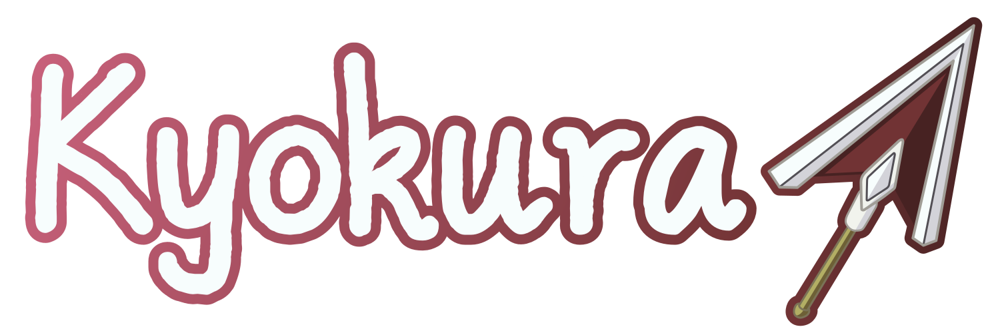

Kyokura is a computer software development team consisting of exactly one person (me, hehe). As of now, my publicly released works consist entirely of game mods.
Note that some older works have been released under the name "JuniDev".
Click any of the links below to browse stuff that I've been working on.